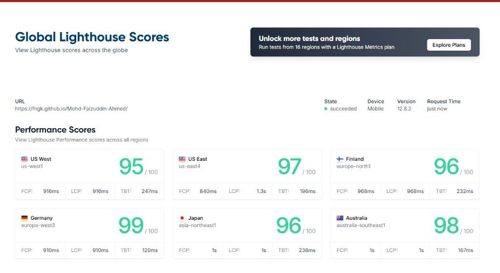

Hyderabad Globe FC digital transformation
Technical rebuild and local SEO structure optimization with strong performance targets.
Read full case studyThese case studies show how strategy translates into execution, with clear context, constraints, and measurable outcomes.
Technical rebuild and local SEO structure optimization with strong performance targets.
Read full case study
Structured 10-part audit with technical, content, and internal linking priorities.
Read full case study
Explore public proof snapshots and external references used for client transparency.
Open mentions and proof